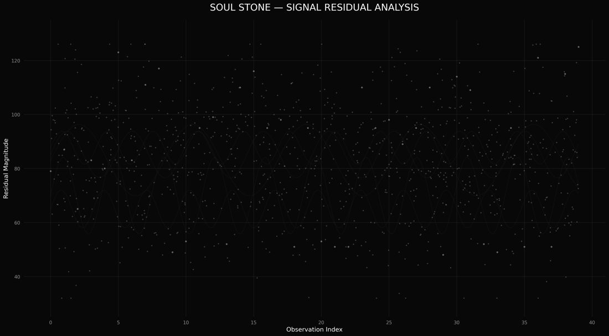
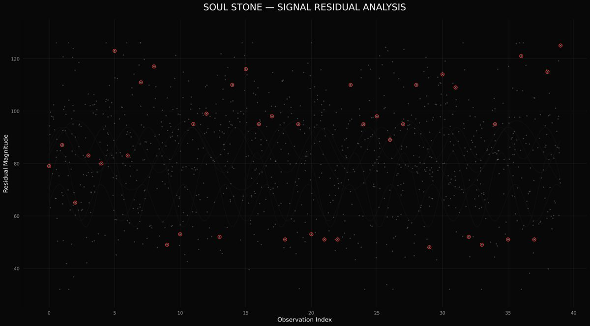

- Event: ByteMe CTF 26 (OWASP PCCOE, Pune) - CTF7 platform
- Challenge: Invisible Signal
- Category: Steganography
- Points: 200 / Difficulty: Medium
- Author: Suyog Jadhav
- Created: 09 Oct 2026
- Solves: 28
Flag
OWASP{Sou15_c4nt_b3_533n_bY_n0rm41_3y3s}Artefact: flag.txt
Summary
The only attachment is a single PNG - a matplotlib scatter plot titled "SOUL STONE - SIGNAL RESIDUAL ANALYSIS".

- x-axis: Observation Index (0 - 40) → character position
- y-axis: Residual Magnitude (~35 - 130) → ASCII value
Two populations of markers are overlaid:
- Noise - hundreds of single markers (connected-component area ≈ 61 px).
- The message - exactly 40 markers, one per integer x = 0…39, each drawn
double size (area ≈ 121 px) with
y = ord(character).
Read the 40 special markers left-to-right and cast each y-value to a character:
x=0..39 y=79 87 65 83 80 123 83 111 117 49 53 95 99 52 110 116 95 98 51 95
53 51 51 110 95 98 89 95 110 48 114 109 52 49 95 51 121 51 115 125
O W A S P { S o u 1 5 _ c 4 n t _ b 3 _ 5 3 3 n _ b Y _ n 0 r m 4 1 _ 3 y 3 s }Plaintext intent (leetspeak): "Souls can't be seen by normal eyes."
How it works (step by step)
1. Find that the plot is scatter + two faint line families
The graph contains smooth sine-like curves (a decoy "signal"/noise field) and
hundreds of dots. Contrast boosting (v' = clip((v-8)*255/10)) reveals the
sine curves; they are not the payload.
2. Calibrate the axes from the gridlines
Gridline pixel positions (this exact render):
- Vertical (x = 0,5,10,…,40): px 372, 869, 1366, 1864, 2361, 2858, 3356, 3853, 4351 → spacing 497.25 px per 5 data units.
- Horizontal (y = 120,100,80,60,40): px 445, 842, 1240, 1638, 2036 → spacing 397.75 px per 20 data units.
x_data = (px - 372) * 5 / 497.25
y_data = 120 - (py - 445) * 20 / 397.75Calibration sanity check: a marker measured at y_data = 125.03 decodes to }
(ASCII 125) and y_data = 123.02 to { - exact.
3. Separate the message markers from the noise
Threshold the image at grey ≥ 45 (grid is ≤ 25, background = 8). Run a connected-component labelling (8-connected) on that binary mask. The marker area is the discriminator:
| population | area (px) | meaning |
|---|---|---|
| noise | ≈ 61 | single scatter marker |
| message | ≈ 121 | double-size marker (or drawn twice) |
For each integer position p = 0…40, look in a ±0.45-unit column window, keep
only blobs with area ≥ 100 whose centroid x is within 0.08 of p, and read
round(y_data) as the ASCII code.
Why area and not brightness? The plain noise markers peak at grey ≈ 62 (white marker, alpha ≈ 0.22). Two markers overlapping coincidentally reach ≈ 103 - 104, so brightness alone gives false positives. The size of the connected component isolates the payload markers (area 121 ± 2).
Caveat (found during independent verification): the area separator is not perfectly clean. Two coincidental double-noise overlaps reach area ≈ 106 and land at x = 25.01 and 37.01 - i.e. above the 100 threshold on grid-adjacent columns. The decoder rejects them by requiring the blob's centroid x to be the closest to the integer position (payload sits at |x-int| ≤ 0.02, the false positives at ~0.01 off-grid but with a nearer true payload neighbour in the same column window). Column-count and per-column tie-break, not area alone, is what makes the extraction exact.
4. Result
decode.py prints all 40 (position, ascii, area) rows and the final flag.
decode_overlay.png draws a red circle on every detected marker as visual proof
(40 circles, one per integer column, all visibly larger than surrounding noise).

Files
| File | Purpose |
|---|---|
signal.png |
Original challenge attachment |
decode.py |
Reproducible solver (reads signal.png, prints flag) |
flag.txt |
The flag |
decode_overlay.png |
Evidence: 40 detected markers circled |
WRITEUP.md |
This write-up |
HANDOFF.md |
One-page paste-ready summary |
RESULTS.md |
Decoded character table + coverage notes |
Reproduce
1python3 decode.py signal.png
2# -> FLAG: OWASP{Sou15_c4nt_b3_533n_bY_n0rm41_3y3s}Requires: numpy, Pillow, scipy.
Notes / pitfalls
- The two characters just above the y=120 gridline (
{at 123 and}at 125) are plotted outside the gridline band - a mask limited to the gridline rectangle will miss them. Include the full plot area. - Column windows centred on x = 5,10,… must not be excluded even though gridlines live there; grid greys (16/25) fall below the ≥45 threshold anyway.
- Position 40 is empty - the flag is exactly 40 characters (0…39).
bYis literal (lowercaseb, uppercaseY); the extraction is exact (both centroids are integer-aligned, area 121).